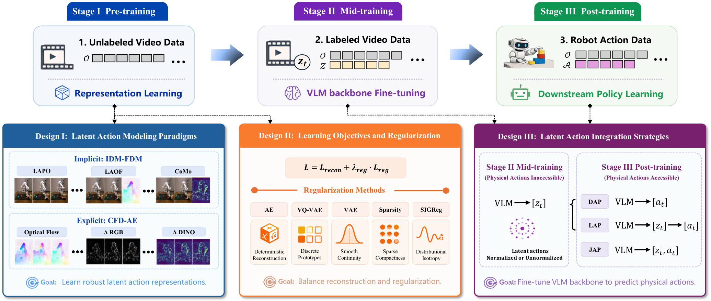
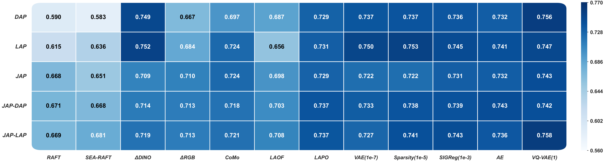
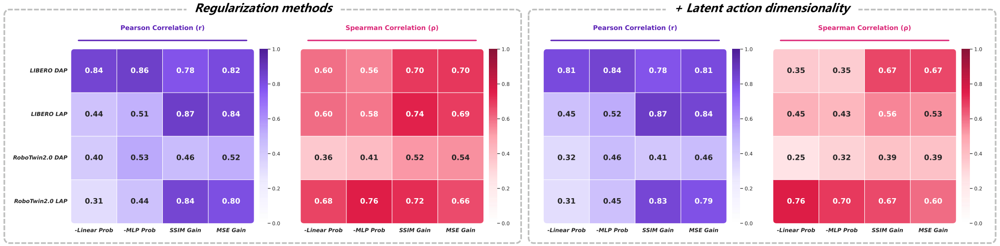
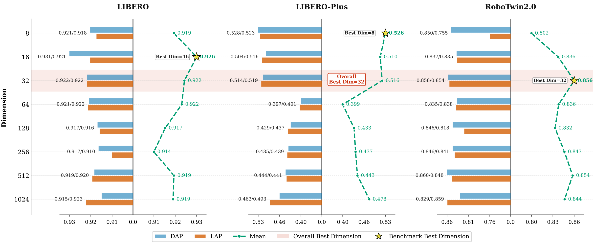
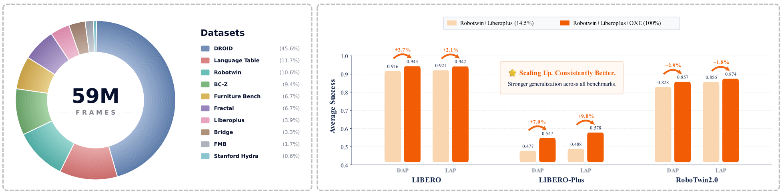
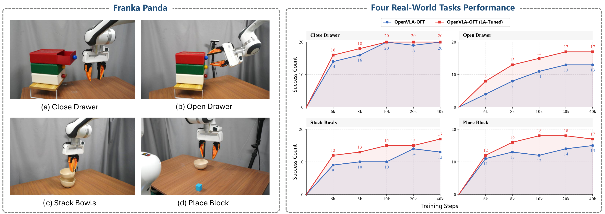

What Matters for Latent Actions in Robot Learning
1. 论文速览与证据链
一句话贡献
在统一三阶段管线中系统比较 41 种 latent action 设计，回答建模范式、正则化、动作头、代理指标、维度与数据规模究竟如何影响下游操控。
元数据与阅读定位
| 技术类型 | Latent action empirical study |
|---|---|
| 关键词 | latent action、IDM-FDM、CFD-AE、DAP/LAP/JAP、proxy metric、LIBERO-Plus、RoboTwin2.0、LA-tuning |
| 开源情况 | 论文与项目页公开；统一实现与完整训练资产需以作者发布为准 |
| 适合程度 | 很高：适合作为 latent action 设计空间与实验结论的总入口 |
从哪里开始读
Stage I 使用 700M 时空 Transformer 从相邻帧学习 latent transition；Stage II 让 Qwen3-VL-4B/OpenVLA-OFT 骨干在无物理动作标签条件下吸收 latent action；Stage III 再用真实动作监督训练策略。DAP/LAP 仅以 latent action 调整骨干，JAP 系列则联合 latent 与 physical action。 阅读时先确认中间表示是否在部署端运行，再用主结果和消融判断它究竟改善了感知、动态预测还是动作生成。
图表证据链
| # | 原始图 | 支持的主张与边界 |
|---|---|---|
| 1 | 三阶段设计空间总览 | 图中把无动作视频、latent action 微调和物理动作后训练串成一条管线，并标出三类设计变量。它支撑本文的受控实验框架，但不直接给出哪一配置最优。 |
| 2 | 动作头与表示的耦合 | 热力图按表示/正则方法和 DAP、LAP、JAP 系列动作头展开；深色区域并未集中在单一行，说明表示排名依赖后端接口。 |
| 3 | 代理指标与下游性能相关性 | Pearson 与 Spearman 面板比较四个 proxy；相关方向和强度不稳定，直接否定了用重建质量单独选型的做法。 |
| 4 | latent 维度的非单调影响 | 8 到 1024 维在三个 benchmark 上分别绘制 DAP/LAP 成功率，峰值并非简单落在最大维度。 |
| 5 | Stage II 数据规模效应 | 左侧给出 OXE 混合构成，右侧比较不同微调规模；该图支持数据扩大仍有收益，但只覆盖两档规模。 |
| 6 | Franka 真实任务验证 | 左侧是平台和四类任务，右侧跨 6k–40k checkpoint 比较基线与 LA-Tuned；优势跨训练阶段出现，而非单点挑选。 |
2. 问题与动机
问题定义
现有 LAM 工作常在不同数据、骨干与动作头上各自验证，单篇论文的提升无法说明究竟来自 latent action 本身还是训练配置。本文把问题改写成受控变量实验：先从无动作视频学习状态转移，再用 latent action 微调 VLM，最后接物理动作数据，比较同一骨干下的 41 组设计。
现有路线为何不足
相关路线被归纳为隐式 IDM-FDM 与显式 CFD-AE 两类，并把 optical flow、视觉差分、VAE、VQ-VAE、稀疏性和 SIGReg 放入共同坐标系。相对只提出一个新方法，本文的贡献是拆开 representation、regularization 与 integration 三个变量，避免把动作头收益误算为表示收益。
作者的解题假设
在统一三阶段管线中系统比较 41 种 latent action 设计，回答建模范式、正则化、动作头、代理指标、维度与数据规模究竟如何影响下游操控。 该假设只有在统一骨干、数据和评测下仍带来增益时才成立。
4. 方法、表示与训练
端到端信息流
Stage I 使用 700M 时空 Transformer 从相邻帧学习 latent transition；Stage II 让 Qwen3-VL-4B/OpenVLA-OFT 骨干在无物理动作标签条件下吸收 latent action；Stage III 再用真实动作监督训练策略。DAP/LAP 仅以 latent action 调整骨干，JAP 系列则联合 latent 与 physical action。
核心表示
研究同时比较 ΔRGB、ΔDINO、RAFT/SEA-RAFT、LAPO、LAOF、CoMo 以及多种自编码正则化。核心观察不是某一种编码恒胜，而是 latent action 是否把可控变化与外观噪声分开，以及它与后续 action head 的耦合方式；因此作者还检查维度、归一化和正则强度。
训练阶段与目标
Stage I 将视频以 1–5 倍随机时间间隔采样、中心裁剪到 224×224，并用 AdamW 训练；Stage II/III 采用 Qwen3-VL-4B 和 OpenVLA-OFT。大规模语料约 5900 万帧，混合 OXE、DROID、Language Table、Bridge、RoboTwin 与 LIBERO-Plus；主要实验使用 8×H200。
推理与部署路径
部署时不运行未来帧生成器，而是保留经 latent action 调整后的 VLM 表征与动作头。论文由此把 LAM 的价值定义为更好的策略初始化，而不是额外的在线预测模块；真实 Franka 实验只使用前视 RGB，便于隔离 latent pretraining 的贡献。
三阶段设计空间总览

动作头与表示的耦合

代理指标与下游性能相关性

5. 实验、结果与消融
数据集、任务与协议
评测覆盖 LIBERO、LIBERO-Plus 与 RoboTwin2.0，两种控制空间分别为 7-DoF 单臂末端增量和 14-DoF 双臂关节控制。结果按三随机种子汇总，并另在 Franka Panda 上用四任务、每任务 50 条示范和每检查点 20 次独立试验验证。
主要定量结果
热力图表明 action head 与表示存在明显交互，不能仅用单一 latent 编码排名。真实机器人上 LA-Tuned OpenVLA-OFT 在多个训练检查点持续优于原始基线；扩大 Stage II 视频混合后，下游成功率继续提高，支持“latent action 微调 VLM 是可扩展初始化”的主张。
消融与因果解释
四个代理指标是 linear/MLP probe loss 与 SSIM/MSE gain，但 Pearson 与 Spearman 相关性并不稳定，说明低重建误差不能替代真实控制评测。维度实验覆盖 8–1024，正则强度也呈非单调关系；归一化在不同方法和数据集上有正负两种效果，不能作为默认操作。
证据没有覆盖什么
从当前评测覆盖看，结论集中在操控和指定骨干，不能直接外推到自动驾驶、语言规划或任意 VLA。大规模混合数据改变了任务分布，真实实验也只有单平台四任务；代理指标失效意味着未来方法仍需昂贵的下游验证。论文最有价值的边界结论是：latent action 的收益来自整条训练链，而非一个孤立 token。
latent 维度的非单调影响

Stage II 数据规模效应

Franka 真实任务验证

6. 复现路径与工程风险
最小可行复现
最小复现应固定 Qwen3-VL-4B、同一 Stage III 数据和 action head，先复刻 Design I 的表示对照，再逐步加入正则与维度变量。验收应同时报告三个 benchmark 成功率、三随机种子方差和代理指标相关性；最大成本是 5900 万帧预训练与 8×H200 计算。
验收标准
热力图表明 action head 与表示存在明显交互，不能仅用单一 latent 编码排名。真实机器人上 LA-Tuned OpenVLA-OFT 在多个训练检查点持续优于原始基线；扩大 Stage II 视频混合后，下游成功率继续提高，支持“latent action 微调 VLM 是可扩展初始化”的主张。 复现时至少应恢复相同方向的增益，并报告同一随机种子、数据规模和延迟预算。
复现风险清单
| 环节 | 具体风险 |
|---|---|
| 数据 | 需取得论文列出的训练数据、相同切分与时间同步；未公开数据必须单列。 |
| 模型 | 需固定视觉/VLM 骨干、tokenizer 与动作头，避免把模型规模差异误判为方法收益。 |
| 训练 | 按论文阶段顺序复现，并保留无 latent/world objective 的严格对照。 |
| 评测 | 同时复现主指标、消融和失败类型；开环结果不能替代闭环安全。 |
| 硬件 | 最小复现应固定 Qwen3-VL-4B、同一 Stage III 数据和 action head，先复刻 Design I 的表示对照，再逐步加入正则与维度变量。验收应同时报告三个 benchmark 成功率、三随机种子方差和代理指标相关性；最大成本是 5900 万帧预训练与 8×H200 计算。 |
7. 分析、局限与边界
最有价值的贡献
综合方法与实验证据，在统一三阶段管线中系统比较 41 种 latent action 设计，回答建模范式、正则化、动作头、代理指标、维度与数据规模究竟如何影响下游操控。
作者结论的适用边界
将结论外推前需要保留以下边界：结论集中在操控和指定骨干，不能直接外推到自动驾驶、语言规划或任意 VLA。大规模混合数据改变了任务分布，真实实验也只有单平台四任务；代理指标失效意味着未来方法仍需昂贵的下游验证。论文最有价值的边界结论是：latent action 的收益来自整条训练链，而非一个孤立 token。
可信的后续实验
后续可把本文设计表转成自动化 benchmark：固定视频语料与策略后端，只替换 latent tokenizer，并加入跨 embodiment、长时域和 closed-loop safety 指标。对自动驾驶而言，应特别测试 ego-motion 与环境运动分解、token 容量和规划延迟，而不是照搬操控维度。
8. 组会问答与阅读结论
Q1. 为什么它比再提一个 LAM 更重要？
A：因为 41 组受控实验把表示、正则、动作头和数据规模拆开，能判断已有提升来自哪里。
Q2. 代理指标能否筛选模型？
A：不能稳定替代下游成功率；四种 proxy 与控制表现的 Pearson/Spearman 相关性随配置变化。
Q3. latent action 最可靠的作用是什么？
A：作为 Stage II 的 VLM 初始化信号，让 Stage III 物理动作学习从更好的时序表征开始。
Q4. 归一化是否必需？
A：不是；不同方法与 benchmark 出现相反效果，应作为待调变量。
Q5. 迁移到驾驶最先验证什么？
A：先验证 ego/environment dynamics 解耦与闭环规划收益，再讨论 token 维度或更大模型。
我的阅读笔记
结合本批论文的比较，我的后续关注点是：后续可把本文设计表转成自动化 benchmark：固定视频语料与策略后端，只替换 latent tokenizer，并加入跨 embodiment、长时域和 closed-loop safety 指标。对自动驾驶而言，应特别测试 ego-motion 与环境运动分解、token 容量和规划延迟，而不是照搬操控维度。